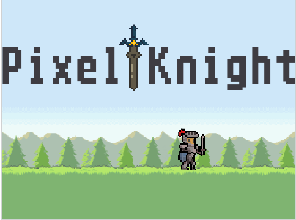
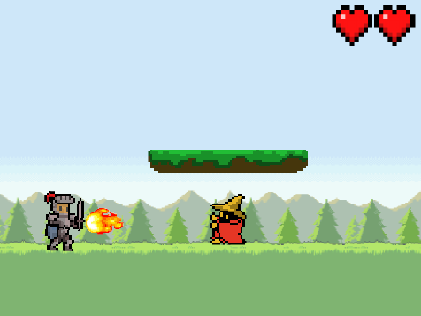
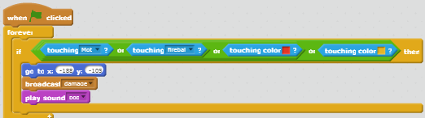
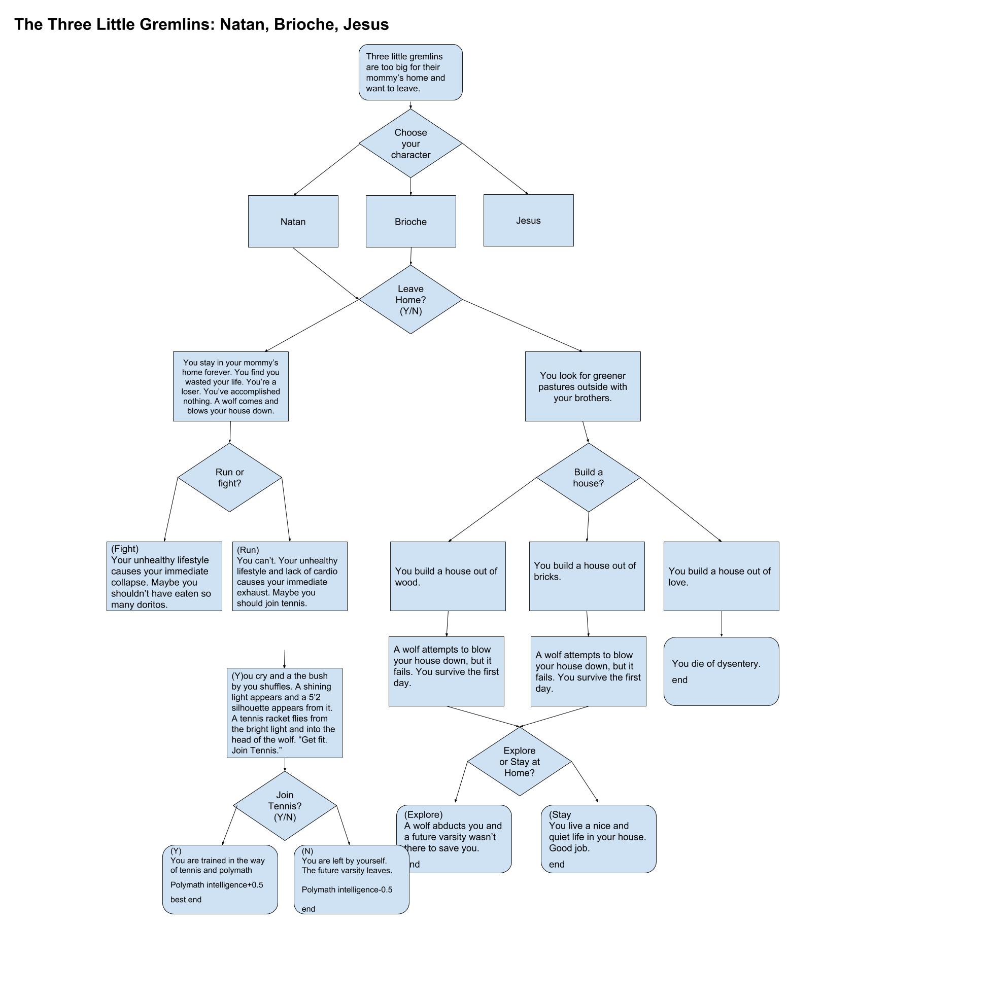

Choose Your Own Adventure
Pixel Knight


Link to the game
About
In "Pixel Knight," you are a pixelated knight. The scoring is based on
how long you can last without taking damage or "game-ending". Randomness can
be found in the frequency of fireballs being shot. The game progresses in difficulty
every level. The game ends when you lose all three lives.
Reflection
"Pixel Knight" was inspired by my love of platformer games and retro games.
Points of success in "Pixel Knight" were when I achieved jumping and platforms.
Two obstacles faced by "Pixel Knight" were platforming and time, but I was able
to overcome both. If I had more time or resources on this project, I would add
an actual storyline and more levels to my game.
Significant Algorithm

It is an algorthm because it executes that command whenever certain requirements are met.
It works whenever the main sprite touches those colours. Whenever you touch those colors
the game makes you take damage and the score resets.
More Blocks

3 Little Gremlins
The player can take the point of view as one of three gremlins who attempt to journey far
from their mother's home. They make choices in a twisted version of the classic "The 3 Little Pigs".
It's a choose-your-own-adventure story where the user faces frequent obstacles in their journey to find a
place to call home.

The incremental and iterative development processes of my program include the use of Google Drawings in order to sequentially develop the
scenes of my story and the use of functions in order to isolate each scene in Python. Google Drawings was used to plan each scene and label the order
the user would have to follow in order to reach an ending. In Python, each function would be its own individual scene and could branch out to other
functions. We would then run the program and attempt to reach each ending. The isolation of each function meant that we would have to run each function
in order to read any error messages. If any were found (many due to simple mistakes such as forgetting a quotation mark), the function would have to be revised.
It was difficult to enable the user to have enough control over the story without making the story unnecessarily complex, so we attempted to compromise with as
many decisions as possible.
The organization of scenes of my story is a form of procedural abstraction because the functions can be diverted into multiple scenes. The advantages of abstracting
your scenes into functions are that each scene is isolated from one another allowing for easy manipulation of each individual scene: being able to remove or add as many
scenes as possible without disrupting the flow of the story.
Two stories that I enjoyed were Natan's Adventure to Varsity due to its RPG aspect and World War Two simulator because of the routes that we could've taken.